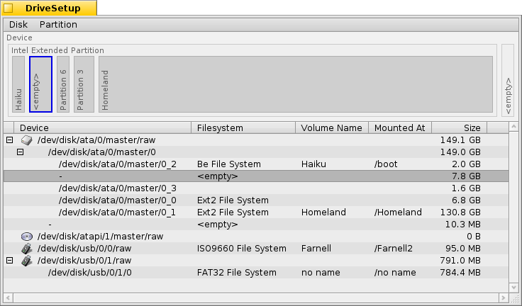
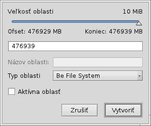
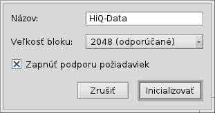

Slovenčina
Slovenčina Català
Català Deutsch
Deutsch English
English Español
Español Français
Français Italiano
Italiano Magyar
Magyar Polski
Polski Português
Português Português (Brazil)
Português (Brazil) Română
Română Suomi
Suomi Svenska
Svenska 中文 ［中文］
中文 ［中文］ Русский
Русский Українська
Українська 日本語
日本語 Nastavenie diskových oblastí
Nastavenie diskových oblastí
| Panel: | ||
| Umiestnenie: | /boot/system/apps/DriveSetup | |
| Nastavenia: | ~/config/settings/DriveSetup |
Nastavenie diskových oblastí je nástroj na vytvorenie, vymazanie a inicializovanie oblastí disku. Momentálne nedokáže zmeniť veľkosť alebo presunúť existujúce oblasti, takže budete buď potrebovať nerozdelené zariadenie (možno externý USB disk alebo ďalší pevný disk) alebo spraviť predprípravu nástrojom ako napríklad GParted LiveCD, aby ste poskytli miesto pre ďalšiu oblasť.
Navrchu je grafické zobrazenie všetkých oblastí v rámci zariadenia, ktoré ste vybrali v zozname pod tým. Okrem maximálne 4 primárnych oblastí, každá z týchto môže obsahovať množstvo rozšírených/logických oblastí. Možno budete musieť rozbaliť takýto zoznam pomocou tlačidla +/-, ktoré sa v takom prípade zjaví pred zariadením, aby ste si pozreli podrobnosti o každej logickej oblasti.
Môžete vybrať oblasť zo zoznamu a pripojiť alebo odpojiť ju príkazom v menu alebo stlačením ALT M alebo ALT U.
Môžete oblasť úplne vymazať pomocou .
Čo nás privádza k upozorneniu:
 Vytváranie novej oblasti
Vytváranie novej oblasti
Keď ste našli neformátované miesto na zariadení, ako napríklad <prázdne> vyššie, môžete vytvoriť na tomto mieste novú oblasť pomocou (ALT C).
Zobrazí sa vám tento dialóg, ktorý vám dovolí nastaviť typ a veľkosť oblasti. Vyberte ak chcete použiť oblasť pre inštaláciu Haiku alebo ak tam chcete použiť všetky zaujímavé vlastnosti Haiku, ako atribúty a požiadavky. Uvedomte si, že iné operačné systémy nebudú schopné k takej oblasti pristupovať.
Ak ste vytvorili primárnu oblasť miesto ďalšej rozšírenej/logickej oblasti v rámci nejakej, dialóg vyššie tiež zobrazí zaškrtávaciu voľbu . Ak tú oblasť chcete použiť na zavedenie inštalácie Haiku, budete túto voľbu musieť zaškrtnúť.
Predtým ako môžete použiť alebo dokonca len pripojiť novo vytvorenú oblasť, musí byť inicializovaná súborovým systémom.
Inicializácia oblasti
Len nepripojené oblasti je možné inicializovať, pomocou menu .
Tu nastavujete názov a veľkosť bloku oblasti. Odporúča sa 2048 bajtov na blok, ale tiež môžete vybrať väčšie alebo menšie veľkosti, ak máte veľmi špecifické požiadavky.
Inicializácia zničí všetky údaje na dotyčnej oblasti!